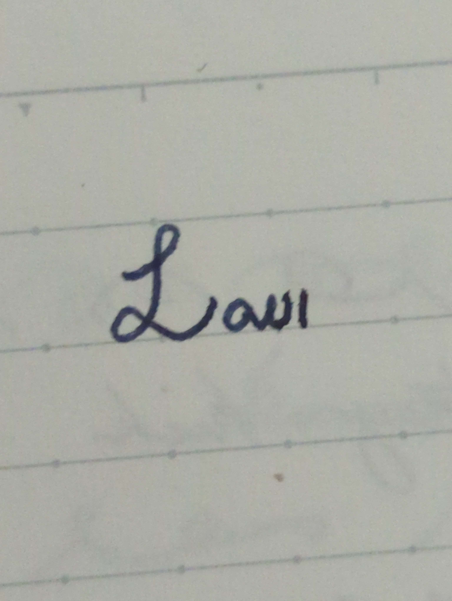

Dear Prodroppers,
Since rapture took away half of LUC, decided to watch Arrival and elfmin to better understand end times. Was seiseiluilui (opposite of shishiruirui).
Shamefully forgot to formally announce results of vote from Newsletter #34: low subject unaccusatives lost, but cill /kɪl/ and call /kæl/ (both future tense of can), con’t (cill + n’t), wan (“contrary to expectation”), and shan (“as expected”) all made it!
Eska “owl” morphologically complex? Ow ‘to feel pain’ + -le (optative)?
Sofie has successfully used the arcane art of orthography mixing to reach new developments in elflegalism:

Rememberel to elfmin,
Hussein
(Use use the following form if want to sign up for law from another email: https://forms.gle/wa8xVjh455JtCd336)